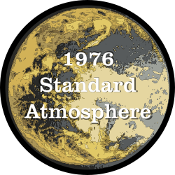

standard-atmosphere


1976 Standard Atmosphere in Modern Fortran
The U.S. Committee on Extension to the Standard Atmosphere (COESA) atmosphere model, also known as the U.S. Standard Atmosphere, 1976. A Fortran translation of the Julia code from COESA.jl.
Just an experiment. Has not been validated.
Implementation
For altitudes below 86 km, the equations from the original report are used. The published tables have a discontinuity in the mean molecular weight and temperature at 86 km. The report outlines how to blend out the discontinuity. We implement this blending here. In this region, the model output matches the published tables nearly perfectly. Only a few of the tested altitudes show differences. It is only in the pressure values, and in these cases we only miss the least significant digit.
For the region above 86 km, the temperature is computed using the equations from the original report, but the equations for the mean molecular weight and pressure are much more complex. Instead, we adapt the method from Regan's Re-Entry Vehicle Dynamics to interpolate the tabulated mean molecular weight and pressure. We use a quadratic interpolation on the mean molecular weight and the natural log of the pressure. Because we are using interpolation, the computed pressure and density occasionally don't match the published values. The values are very small, and we still have at least 2 significant digits.
The density is computed as outlined by the original report.
The speed of sound is computed as outlined by the original report for altitudes below 86 km. For altitudes above 86 km, the speed of sound at 86 km is used.
Compiling
A Fortran Package Manager manifest file is included, so that the library and tests cases can be compiled with FPM. For example:
fpm build --profile release
fpm test --profile release
To use standard-atmosphere within your fpm project, add the following to your fpm.toml file:
[dependencies]
standard-atmosphere = { git="https://github.com/jacobwilliams/1976-standard-atmosphere.git" }
Documentation
The API documentation for the current master branch can be found here. This is generated by processing the source files with FORD.
License
This library is released under a permissive license.
References
- "U.S. Standard Atmosphere, 1976". Stock No. 003-017-00323-0.
- Regan, F.J., "Re-Entry Vehicle Dynamics", AIAA Press, New York, 1984.